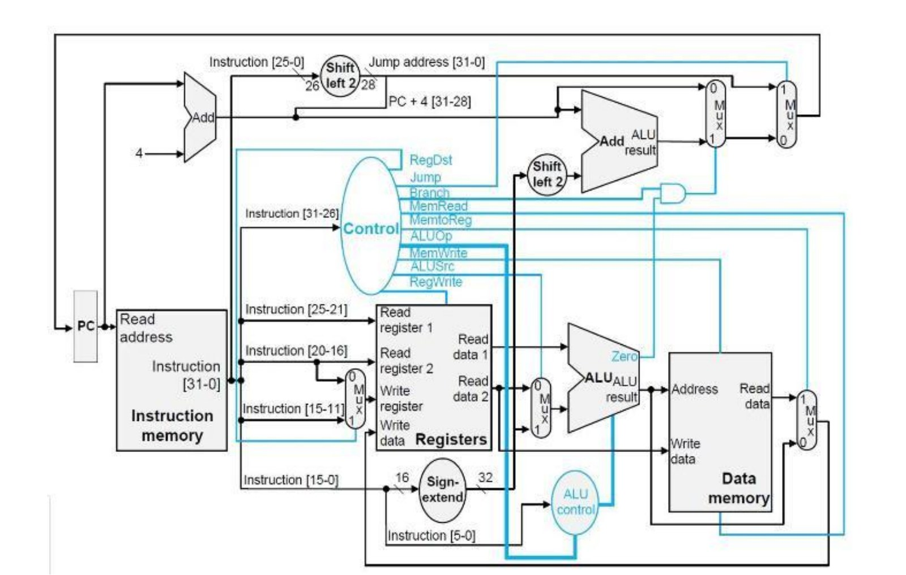
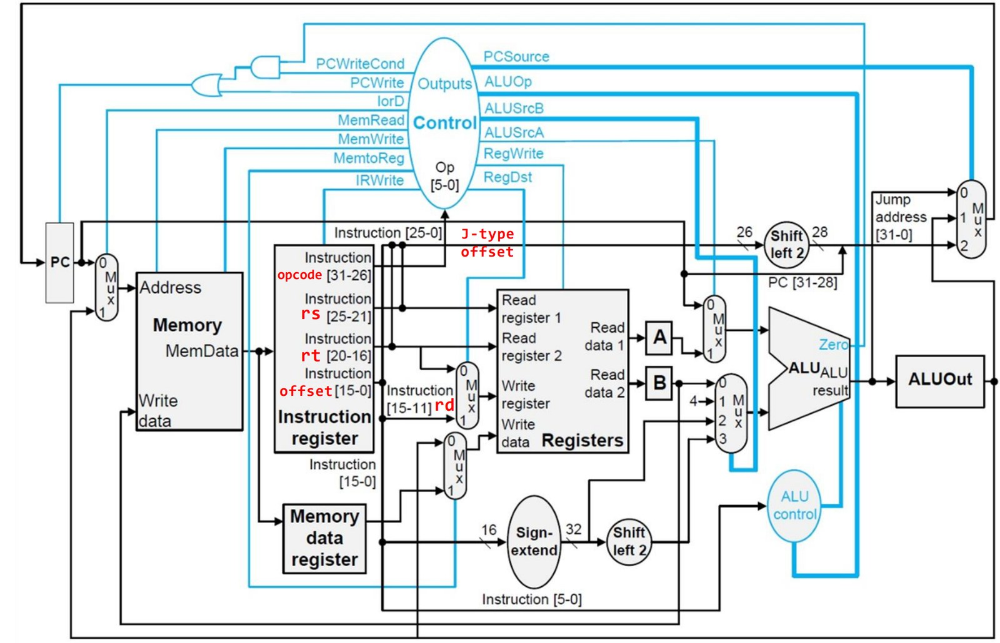

← All projects
Computer architecture
MIPS32 processor simulator
I wrote three cycle-accurate MIPS32 simulators in C++: single-cycle, multi-cycle and pipelined. The project was awarded 10/10.

Problem
Single-cycle, multi-cycle and pipelined processors execute the same instructions in very different ways. Writing a simulator for each one, cycle by cycle, makes the differences concrete, especially the hazards that pipelining introduces.
What I did
- Implemented single-cycle, multi-cycle and pipelined MIPS32 simulators in C++, each modelling its own datapath.
- Added hazard detection, forwarding and control-flow handling to the pipelined version.
- Each simulator runs an assembly program and logs the processor state every cycle.
Results
- 3cycle-accurate simulators: single-cycle, multi-cycle, pipelined
- 10/10final mark
| Cycle | IF | ID | EX | MEM | WB |
|---|---|---|---|---|---|
| 29 | or $s7, $s7, $s7 | addi $t0, $t0, 1 | ori $ra, $zero, 0x0 | ori $k1, $zero, 0x0 | ori $k0, $zero, 0x0 |
| 30 | bne $t0, $s7, loop_0 | or $s7, $s7, $s7 | addi $t0, $t0, 1 | ori $ra, $zero, 0x0 | ori $k1, $zero, 0x0 |
| 31 | bne $t0, $s7, loop_0 | bubble | or $s7, $s7, $s7 | addi $t0, $t0, 1 | ori $ra, $zero, 0x0 |
| 32 | bne $t0, $s7, loop_0 | bubble | bubble | or $s7, $s7, $s7 | addi $t0, $t0, 1 |
| 33 | addi $t2, $t2, 1 | bne $t0, $s7, loop_0 | bubble | bubble | or $s7, $s7, $s7 |
| 34 | addi $t0, $t0, 1 | bubble | bne $t0, $s7, loop_0 | bubble | bubble |
| 35 | or $s7, $s7, $s7 | addi $t0, $t0, 1 | bubble | bne $t0, $s7, loop_0 | bubble |
bne needs $s7 from the instruction just ahead of it, so it waits two cycles while bubbles move down the pipeline. When the branch is taken, the fall-through instruction it fetched (addi $t2) is flushed.Media
-

Single-cycle datapath: every instruction finishes in one clock cycle. -

Multi-cycle datapath: one memory and one ALU, reused across several shorter cycles.